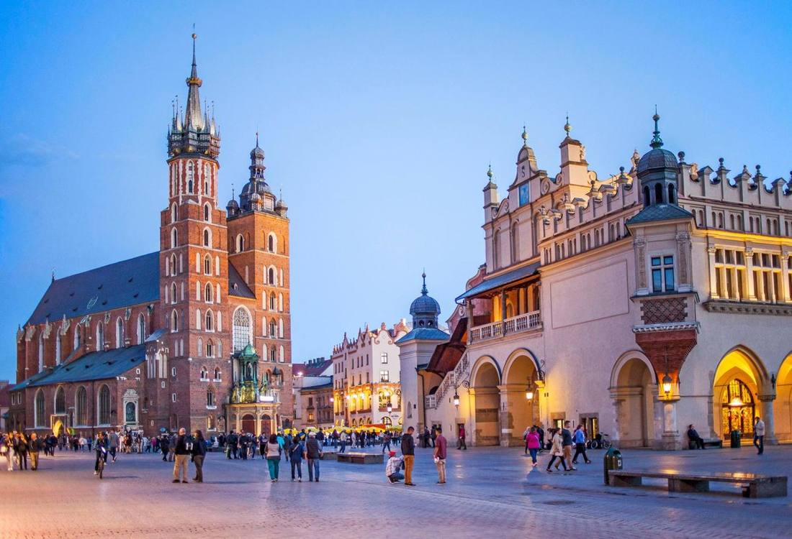
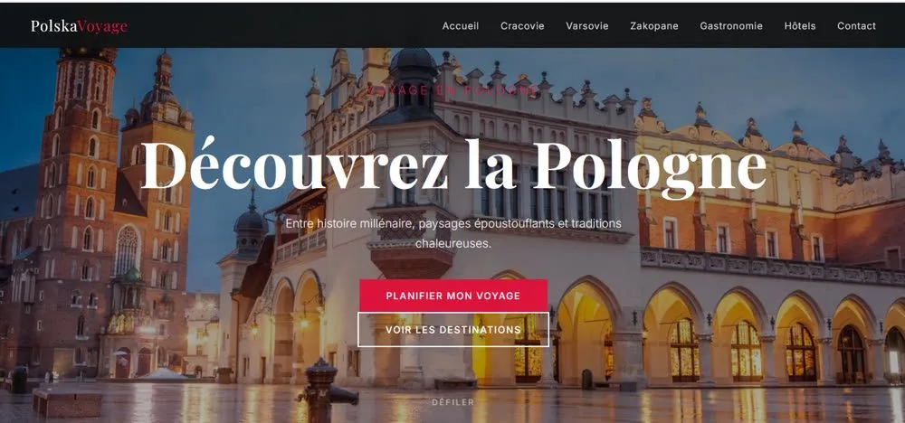

PolskaVoyage
Site créé avec l'IA pour faire découvrir mon pays, la Pologne : trois villes touristiques, la gastronomie et des hôtels où dormir.

Le projet
Faire découvrir mon pays, la Pologne, aux voyageurs francophones. Le site présente les trois villes les plus touristiques : Cracovie, Varsovie et Zakopane, avec pour chacune trois lieux à visiter.
Il guide aussi le voyageur sur quoi goûter (six spécialités et trois boissons) et où dormir (deux hôtels par ville), jusqu'à la prise de contact.
Mon rôle
- Choix des villes, des lieux, des plats et des hôtels, grâce à ma connaissance du pays
- Arborescence de 7 pages : Accueil, Cracovie, Varsovie, Zakopane, Gastronomie, Hôtels, Contact
- Création du site avec l'IA, que j'ai pilotée et corrigée page par page
- Rédaction de textes courts pour donner envie de partir
- Choix des photos et mise en ligne sur GitHub
Outils
- IA générative pour la création des pages
- HTML / CSS
- GitHub Pages pour la mise en ligne
Le contenu du site
Trois villes, une page gastronomie et une page hôtels pour préparer tout le voyage.
- 1
Cracovie
La perle du Sud : le château du Wawel, la place Rynek Główny et le quartier de Kazimierz.
- 2
Varsovie
La capitale résiliente : la Vieille Ville, le Palais de la Culture et le musée de l'Insurrection.
- 3
Zakopane
La capitale des montagnes : le Kasprowy Wierch, le lac Morskie Oko et la rue Krupówki.
- 4
Quoi goûter
Pierogi, żurek, bigos, oscypek, gołąbki et pączki, avec la vodka, la bière Żywiec et le kompot.
- 5
Où dormir
Deux hôtels par ville : Copernicus et Kazimierz à Cracovie, Bristol et Puro à Varsovie, Logos et Villa Marilor à Zakopane.
- 6
Contact
Un formulaire pour poser ses questions et préparer son séjour.